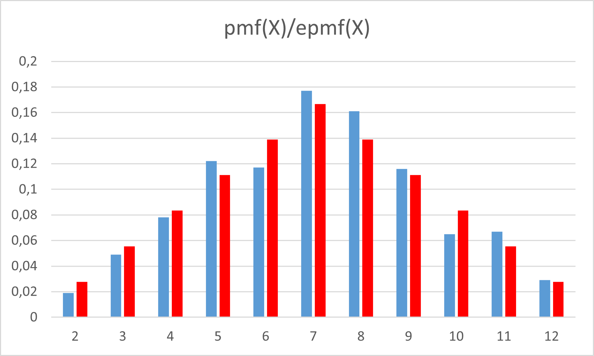
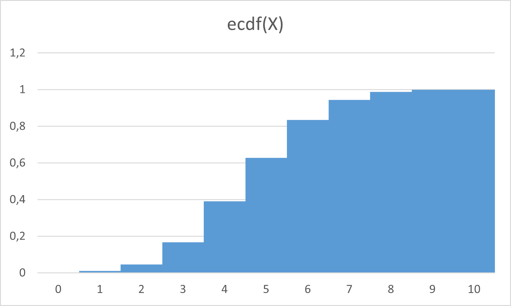
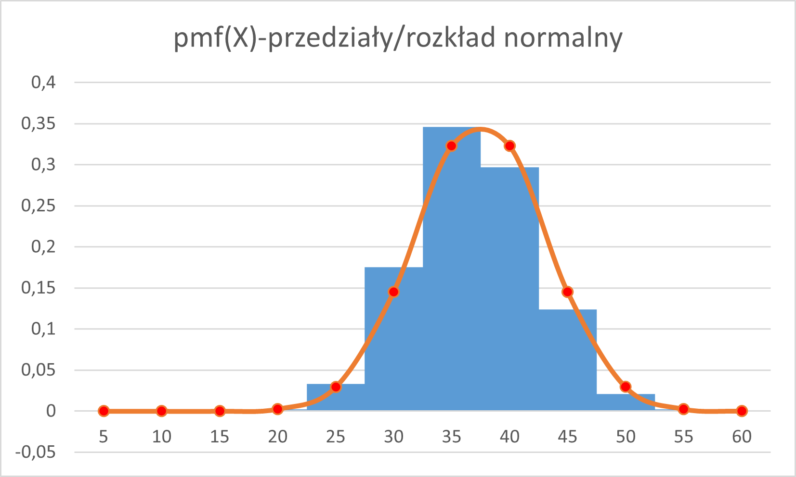

Laboratorium z matematyki
matematykalaboratorium@gmail.com
Matematyka 3. Odpowiedzi
Uwaga: liczby zależą od zestawu danych!
Odpowiedź do zadania A.2
Rozkład masy prawdopodobieństwa pmf(X)

Odpowiedź do zadania A.3
Porównanie rozkładów

Odpowiedź do zadania A.4
Dystrybuanta empiryczna ecdf(X)

Odpowiedź do zadania A.5
Teoretycznie: EX=3,5 oraz D^2X=91/6 - (7/2)^2
Odpowiedź do zadania B.2
Rozkład masy prawdopodobieństwa pmf(X)

Odpowiedź do zadania B.3
Porównanie rozkładów

Odpowiedź do zadania B.4
Dystrybuanta empiryczna

Odpowiedź do zadania C.2
Rozkład masy prawdopodobieństwa pmf(X)
Odpowiedź do zadania C.3
Porównanie rozkładów
Odpowiedź do zadania C.4
Dystrybuanta empiryczna

Odpowiedź do zadania D.2
empiryczny rozkład prawdopodobieństwa
Odpowiedź do zadania D.3
kombinatoryka dla 1-10 kostek
W=x^1+x^2+x^3+x^4+x^5+x^6
W^2=x^12 + 2*x^11 + 3*x^10 + 4*x^9 + 5*x^8 + 6*x^7 + 5*x^6 + 4*x^5 + 3*x^4 + 2*x^3 + x^2
W^10=x^60 + 10*x^59 + 55*x^58 + 220*x^57 + 715*x^56 + 2002*x^55 + 4995*x^54 + 11340*x^53 + 23760*x^52 + 46420*x^51 + 85228*x^50 + 147940*x^49 + 243925*x^48 + 383470*x^47 + 576565*x^46 + 831204*x^45 + 1151370*x^44 + 1535040*x^43 + 1972630*x^42 + 2446300*x^41 + 2930455*x^40 + 3393610*x^39 + 3801535*x^38 + 4121260*x^37 + 4325310*x^36 + 4395456*x^35 + 4325310*x^34 + 4121260*x^33 + 3801535*x^32 + 3393610*x^31 + 2930455*x^30 + 2446300*x^29 + 1972630*x^28 + 1535040*x^27 + 1151370*x^26 + 831204*x^25 + 576565*x^24 + 383470*x^23 + 243925*x^22 + 147940*x^21 + 85228*x^20 + 46420*x^19 + 23760*x^18 + 11340*x^17 + 4995*x^16 + 2002*x^15 + 715*x^14 + 220*x^13 + 55*x^12 + 10*x^11 + x^10
Odpowiedź do zadania D.4
Rozkład częstości w przedziałach
Uwaga: możemy użyć tablicowej funkcji CZĘSTOŚĆ
empiryczny rozkład masy prawdopodobieństwa

Odpowiedź D.5
porównanie z rozkładem normalnym N(70/2 , 5*sqrt(7/6))
